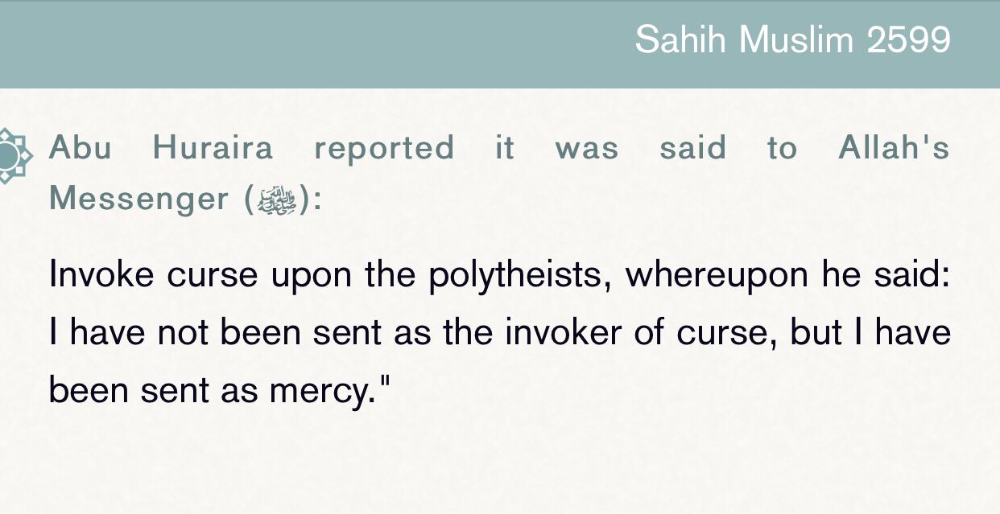

The problem is people get narrations where people angered hence he did
And the curse with the consencus would be something like “unjust person” nothing more

Just as the 10 commandments don’t kill if you kill are u a bad person not nescesarly
And that is why he is the best human ever if it was someone else would be more arrogant than him peace be upon him
And when he would get mad it is only for Allah
Translation: “and second what was caused by his du’a (prayer) and curse upon the non believers is not what is meant but it is what the Arabs were doing at this time of saying words while he doesn’t feel like in the hadith “may your teeth never grow” he doesn’t really mean anything by that du’a’ so he got scared that people would take what he said seriously so he asked his lord that any curse or prayer to be mercy upon them and this didn’t happen often it was rarest of its time. And he peace be upon him wasn’t a fahish or mutafahish nor a curser and it was seen before he was asked to pray against daws so he said may Allah guide daws”
-Source: Sharh Sahih muslim (16/229)
Ibn al-Athir (d.606 A.H) writes:
“And in this supplication by Allahs messenger 2 sayings one of them is that his shock from the care of the questioner and his humor the other saying is that when he found this amount of care by the questioner the human nature overtakes him.”
[An-Nihayah Fi Gharib al-Hadith, volume 1, page 82]
The strongest saying was mentioned here is the first one closest to what an-nawawi said.
————————————————————
Claims have been made, particularly by Sam Shamoun and his cult of wifebeaters, that Sahih Muslim 2603 is a demonstration that the prophet apparently insulted and cursed an innocent little orphan girl for no reason
The Sharh of this Hadith as well as some of those that precede it and follow it by An Nawawi in his Minhaaj is given in the Sharh of Muslim 2600 ⬇️
فإن قيل : كيف يدعو على من ليس هو بأهل الدعاء عليه أو يسبه أو يلعنه ونحو ذلك ؟ فالجواب ما أجاب به العلماء ، ومختصره وجهان :
أحدهما : أن المراد : ليس بأهل لذلك عند الله تعالى ، وفي باطن الأمر ، ولكنه في الظاهر مستوجب له ، فيظهر له صلى الله عليه وسلم استحقاقه لذلك بأمارة شرعية ، ويكون في باطن الأمر ليس أهلا لذلك ، وهو صلى الله عليه وسلم مأمور بالحكم بالظاهر ، والله يتولى السرائر .
والثاني : أن ما وقع من سبه ودعائه ونحوه ليس بمقصود ، بل هو مما جرت به عادة العرب في وصل كلامها بلا نية ، كقوله : " تربت يمينك " ، و " عقرى حلقى " ، وفي هذا الحديث : " لا كبرت سنك " ، وفي حديث معاوية : " لا أشبع الله بطنه " ، ونحو ذلك ، لا يقصدون بشيء من ذلك حقيقة الدعاء ، فخاف صلى الله عليه وسلم أن يصادف شيء من ذلك إجابة ، فسأل ربه سبحانه وتعالى ورغب إليه في أن يجعل ذلك رحمة وكفارة ، وقربة وطهورا وأجرا ، وإنما كان يقع هذا منه في النادر والشاذ من الأزمان ، ولم يكن صلى الله عليه وسلم فاحشا ولا متفحشا ، ولا لعانا ولا منتقما لنفسه ، وقد سبق في هذا الحديث أنهم قالوا : " ادع على دوس " ، فقال : " اللهم اهد دوسا " ، وقال : " اللهم اغفر لقومي فإنهم لا يعلمون " ، والله أعلم .
The second briefing is what is particularly important here:
“That [of these types of sayings] what seems to be an insult or a supplication and of that sort is not intended [with malice or to Allah], but rather it is the habitual and common sayings and rhetorical expressions of the Arabs that said these without intention and purpose such as… in this hadith: “don’t grow old in age”… this is not meant in any way to be as a supplication / curse by Allah, and the prophet ﷺ feared that accidentally [although they were common expressions by the arabs] it would come across in that sense [ie as a curse], so he asked his Lord and wanted him to make that [misunderstanding] a mercy and pardoning, and a nearness and purity and reward, and this is now seen as an anomalous and abnormal zeitgeist, and the prophet was not foul mouthed, and he was not a curser nor was he vengeful…”
So when the prophet told the orphan girl not to age, what was he actually saying?
This is a common expression even now, and the hadith clearly shows that the prophet was being kind to her and nice to her by saying “wow you’re so little!” - and he said to stay young, just as people say now to humour and be kind to children.
She, being young of course, misunderstood him, and thought the prophet cursed her. After all, what kind of curse really is ‘don’t grow old’? It is common sense that such a vague and unproblematic saying was misunderstood by the little girl.
So when Umm Sulaim went to the prophet, did he really say that he cursed her and if she did not deserve it, let it be a mercy of her on the day of resurrection?
No. This was not what the prophet was saying
Looking at what An Nawawi explains of the prophet’s dua to Allah; clearly, what the prophet is meaning here that if someone misunderstood what he said, and it came across as wrong or in this case as a curse, then let that misunderstanding be a mercy and purity for them on the day of judgement
The prophet is NOT saying that he did curse the orphan girl and when confronted, that if she did not deserve to be cursed then let that be a mercy for her.
Rather, he is saying that he did not curse her and she misunderstood what he said to be as a curse, and he said for that misunderstanding to be a mercy for her because it represents innocence, so that innocence and misunderstanding allows them to be purified on the day of judgement.